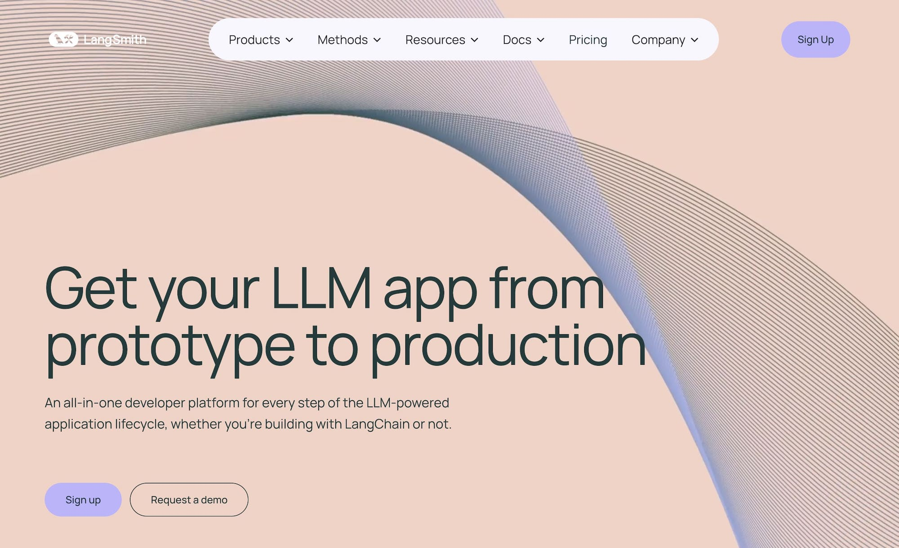
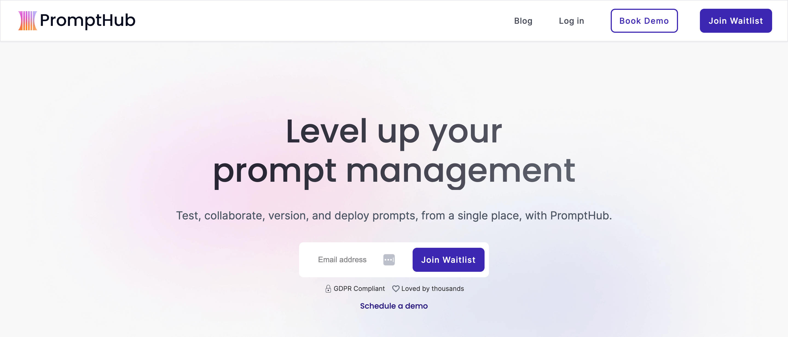

Five Tools to Help You Leverage Prompt Versioning in Your LLM Workflow¶
In our experience, fine-tuning inputs to coax the right answers out of language models requires some level of prompt versioning, otherwise it becomes extremely difficult to keep track of changes past a couple of versions.
So the next question becomes: What kind of versioning system or tool is best?
You’ll want a versioning system that’s adequate to the complexity of your prompts. For prompts that are simple—like pure text or even f-strings containing a placeholder or two—you could consider existing structures and tools such as:
- Lists and nested dictionaries for defining a base prompt, inserting variables as needed from another dictionary, with some rudimentary versioning thrown in.
- Git, or external configurations like environment variables.
These methods could work for simpler prompts, but they’re not terribly efficient and may break down at scale because of growing overhead, or because they’re not well integrated with whatever prompt engineering tool or workflow you’re using.
We’d even argue that, due to their highly iterative and experimental nature, prompts deserve special management. They require a versioning system that’s specifically designed to handle the dynamic nature of prompt development, where each variation needs to be tracked, compared, and reverted in order to quickly refine prompts and deploy them in a controlled, traceable manner.
In fact, our experience suggests that any prompt management system should, at a minimum:
- Organize a central workspace (whether that workspace is local or located on a remote hub) for managing prompts.
- Offer a structured and intuitive versioning system, along with a way to document changes that were made in each version.
- Enable easy navigation between different versions, and the ability to retrieve any specific version.
- Provide an audit trail of who made changes, when these changes were made, and why.
- Be well integrated with your prompt development tool, which in turn either integrates with, or supports LLM pipeline functionalities.
Below, we list five different prompting tools that implement prompt management, starting with an in depth discussion on how we designed Mirascope and Lilypad, our own toolkit and framework, respectively, for developing robust LLM applications, with respect to the discussion above.
- Mirascope and Lilypad—software engineering-inspired prompt engineering, versioning, and management.
- LangSmith—prompt versioning from a central hub.
- Agenta—wide compatibility with LLM app frameworks.
- Pezzo—visual prompt management and testing.
- PromptHub—for collaboration between tech and non-tech roles.
1. Mirascope and Lilypad—Prompt Engineering and Management For Software Engineers¶

Mirascope is a lightweight Python toolkit for building production-grade LLM applications. We built Mirascope as a modular library with scalability in mind. For example, we provide a prompt template decorator so you can write prompts as Python functions, rather than a host of prompt templates for every conceivable use case. Our library recommends native Python for many tasks rather than offering complex abstractions that require a learning curve.
Our prompt management and versioning framework, Lilypad, system works along similar lines. Among other things, we:
- Enable using the tool locally with your LLM prompts
- Provide version control and prompt management best practices, automatically
- Group everything that affects the quality of an LLM call, including the prompt, together as one cohesive unit (colocation) so it can all be versioned together.
- Assure the integrity of inputs to your prompts.
These principles are described in detail in the list of Mirascope features below:
Track Changes in Prompts to Efficiently Manage Them¶
In the following sections, we describe how we make it as easy as possible to track changes to your prompt code by colocating prompts with LLM calls, and by managing prompts with Lilypad.
Colocating Prompts with LLM Calls¶
In previous experiences working with prompts, we found that it’s easy to lose oversight if you scatter everything that affects the quality of the LLM call (like the model parameters or other relevant prompt code) throughout the codebase.
We find this to be a common issue with other frameworks and libraries that don’t enforce colocation, since it becomes harder to trace the effects of changes made to one part of your code, and introduces unnecessary complexity.
Mirascope therefore makes the LLM call the central primitive around which everything, including the prompt, is versioned. It’s hard to overstate the advantages to the developer experience in doing this, especially when your library is making over 100 LLM calls within an enterprise-level LLM application.
An example of colocation is shown below; call_params encapsulates parameters needed for making an OpenAI API call within the context of the get_song_review() call.
from mirascope import openai, prompt_template
@openai.call("gpt-4o-mini", call_params={"temperature": 0.4})
@prompt_template(
"""
SYSTEM:
You are an acclaimed music producer.
USER:
I'm working on a new song. What do you think?
{song_lyrics}
"""
)
def review_song(song_lyrics: str): ...
song_lyrics = "I woke up feeling oh so great, I cooked some food that I ate"
response = review_song(song_lyrics)
print(response.model_dump())
# {
# "metadata": {},
# "response": {
# "id": "chatcmpl-9uO3BPd58TzVWjRejHJxagctE6OSi",
# "choices": [
# {
# "finish_reason": "stop",
# "index": 0,
# "logprobs": None,
# "message": {
# "content": 'That’s a solid start! The positive vibe in those lines is infectious. You might want to build on that feeling of joy and satisfaction. Consider adding some imagery or details about the food or the morning to create a more vivid scene. Here’s a suggestion for how you might expand it:\n\n"I woke up feeling oh so great, \nSunshine streaming, can\'t be late, \nI cooked some food that I ate, \nPancakes flipping, can’t wait!"\n\nThis keeps the upbeat energy and adds a bit more texture. What direction are you thinking of taking the song?',
# "refusal": None,
# "role": "assistant",
# "function_call": None,
# "tool_calls": None,
# },
# }
# ],
# "created": 1723225845,
# "model": "gpt-4o-mini-2024-07-18",
# "object": "chat.completion",
# "service_tier": None,
# "system_fingerprint": "fp_507c9469a1",
# "usage": {"completion_tokens": 116, "prompt_tokens": 45, "total_tokens": 161},
# },
# "tool_types": [],
# "prompt_template": "\n SYSTEM:\n You are an acclaimed music producer.\n \n USER:\n I'm working on a new song. What do you think?\n {song_lyrics}\n ",
# "fn_args": {
# "song_lyrics": "I woke up feeling oh so great, I cooked some food that i ate"
# },
# "dynamic_config": None,
# "messages": [
# {"role": "system", "content": "You are an acclaimed music producer."},
# {
# "role": "user",
# "content": "I'm working on a new song. What do you think?\nI woke up feeling oh so great, I cooked some food that i ate",
# },
# ],
# "call_params": {"temperature": 0.4},
# "call_kwargs": {
# "temperature": 0.4,
# "model": "gpt-4o-mini",
# "messages": [
# {"role": "system", "content": "You are an acclaimed music producer."},
# {
# "role": "user",
# "content": "I'm working on a new song. What do you think?\nI woke up feeling oh so great, I cooked some food that i ate",
# },
# ],
# },
# "user_message_param": {
# "content": "I'm working on a new song. What do you think?\nI woke up feeling oh so great, I cooked some food that i ate",
# "role": "user",
# },
# "start_time": 1723225844872.8289,
# "end_time": 1723225846620.729,
# "message_param": {
# "content": 'That’s a solid start! The positive vibe in those lines is infectious. You might want to build on that feeling of joy and satisfaction. Consider adding some imagery or details about the food or the morning to create a more vivid scene. Here’s a suggestion for how you might expand it:\n\n"I woke up feeling oh so great, \nSunshine streaming, can\'t be late, \nI cooked some food that I ate, \nPancakes flipping, can’t wait!"\n\nThis keeps the upbeat energy and adds a bit more texture. What direction are you thinking of taking the song?',
# "refusal": None,
# "role": "assistant",
# "tool_calls": None,
# },
# "tools": None,
# "tool": None,
# }
Even when using the official provider's SDK, we recommend colocating everything inside what we call an "LLM function":
from openai import OpenAI
client = OpenAI()
def review_song(song_lyrics: str) -> str:
completion = client.chat.completions.create(
model="gpt-4o-mini",
messages=[
{"role": "system", "content": "You are an acclaimed music producer."},
{"role": "user", "content": f"I'm working on a new song. What do you think?\n{song_lyrics}"}
]
)
return str(completion.choices[0].message.content)
This is extremely important for versioning everything together as a single unit.
Managing Prompts with Lilypad¶
Lilypad offers a prompt management and versioning framework that versions and traces every LLM function call automatically. This helps you iterate faster on prompts and their calls rather than worrying about the tedium of versioning and tracing things manually. Ultimately, this provides a more structured way to refine and tests prompts easily while maintaining a clean and organized environment.
|
|-- .lilypad/
|-- |-- config.json
|-- lily/
| |-- __init__.py
| |-- {llm_function_name}.py
|-- pad.db
The Lilypad framework structure contains subdirectories and files for:
- Configuring your project (
.lilypad) - Managing prompts as LLM functions (
lily/) - Saving prompt versions and traces automatically (
pad.db)
The automatically version and trace, all you need to do is add the lilypad.llm_fn decorator on top of your LLM function:
import lilypad
from mirascope.core import openai
@lilypad.llm_fn()
@openai.call("gpt-4o-mini")
def recommend_book(genre: str) -> str:
return f"Recommend a {genre} book"
if __name__ == "__main__":
output = recommend_book("fantasy")
print(output.content)
We include the if __name__ bit so that you can run lilypad run recommend_book to easily run the prompt during development. The above example shows using Lilypad with Mirascope, but Lilypad also works with the official provider SDKs (e.g. the previous OpenAI SDK example).
When using the lilypad.llm_fn decorator, the version is determined based on all user-defined code that could impact the prompt. In more technical terms, the version is determined by the entire lexical closure.
This means not only that any changes to the function itself will be versioned but also that any changes to user-defined functions used by this function will also update the version:
# lily/recommend_book.py
import lilypad
from mirascope.core import openai
# Changes to this function will also be detected and bump
# the version of the LLM function :)
def get_available_books() -> list[str]:
return ["The Name of the Wind"]
@lilypad.llm_fn()
@openai.call("gpt-4o-mini")
def recommend_book(genre: str) -> str:
books = get_available_books()
return f"Recommend a {genre} book from this list: {books}"
if __name__ == "__main__":
output = recommend_book("fantasy")
print(output.content)
Consistently Ensure Prompt Quality with Built-in Validation¶
We aim to reduce the amount of potential errors where feasible by implementing automatic data validation, in particular type safety in prompts.
to accomplish this, our prompt_template and call decorators enable writing prompts and LLM functions as standard Python functions to ensure reliable linting and error handling is simple and easy rather than requiring you to build custom validation logic. For example, you can use Pydantic's validate_call decorator to validate inputs to any LLM function automatically.
Also, documentation, linting, and autocomplete for Mirascope are first-class and available in your IDE to make your development workflows more efficient.
A missing argument in a Mirascope class:

Autosuggestion proposal:

You can additionally add custom validation, for example, in cases where you’d like the LLM to do certain validation tasks that would be harder to accomplish with just manual coding.
For instance, you could ensure that certain generated content maintains a consistent brand voice by using the LLM to make the determination, and then adding Pydantic’s AfterValidator to the extracted output:
from enum import Enum
from typing import Annotated
from mirascope.core import openai
from pydantic import AfterValidator, BaseModel, ValidationError
class Label(Enum):
ON_BRAND = "on brand"
OFF_BRAND = "off brand"
@openai.call("gpt-4o-mini", response_model=Label)
def check_brand_compliance(text: str) -> str:
return f"Does this content adhere to brand guidelines? {text}"
def validate_brand_compliance(content: str) -> str:
"""Check if the content follows the brand guidelines."""
label = check_brand_compliance(content)
assert label == Label.ON_BRAND, "Content did not adhere to brand guidelines."
return content
@openai.call(
"gpt-4o-mini",
response_model=Annotated[str, AfterValidator(validate_brand_compliance)],
)
def generate_content() -> str:
return "Generate content for our new marketing campaign"
try:
content = generate_content()
print(content)
except ValidationError as e:
print(e)
# > 1 validation error for BrandCompliantContent
# content
# Assertion failed, Content did not adhere to brand guidelines. [type=assertion_error, input_value="The generated marketing copy...", input_type=str]
# For further information visit https://errors.pydantic.dev/2.6/v/assertion_error
In the code above, generate_content uses an annotated response_model to run validate_brand_compliance as an AfterValidator, ensuring that the generated content adheres to the company's brand guidelines.
Using Pydantic with Mirascope makes writing even more complex validation logic straightforward and simple.
Test and Evaluate Prompts¶
Effective prompt management involves not only tracking changes to prompts over time, but also testing them for performance and improving them based on those results.
We are actively working on evaluation and testing features in Lilypad. In the meantime, you can easily use the Weave toolkit from the team at Weights & Biases, which is a tool for logging, debugging, evaluating, and organizing all aspects of LLM workflows, from experimentation to production, via their @weave.op() decorator (which allows you to log any call to that op to Weave), as shown below:
from mirascope.core import openai, prompt_template
import weave
weave.init("my-project")
@weave.op()
@openai.call("gpt-4o-mini")
@prompt_template("Recommend some {genre} movies")
def recommend_movies(genre: str): ...
response = recommend_movies("sci-fi") # this will automatically get logged to Weave
print(response.content)
Track Prompt Evolution Through Comprehensive Data Logging¶
Since Mirascope's responses are built on top of Pydantic's BaseModel class, you can use model_dump() to track all inputs and outputs and other configuration parameters of the LLM function call, ensuring reproducibility of results on similar experimental conditions. Lilypad uses this functionality to provide first-class support for automatically versioning and tracing Mirascope functions.
With Lilypad, you can better understand how changes to input values or parameters affect the models' responses without having to worry about manually tracking the dump. For example, for a given prompt, the function might output:
# {
# "metadata": {},
# "response": {
# "id": "chatcmpl-9uO3BPd58TzVWjRejHJxagctE6OSi",
# "choices": [
# {
# "finish_reason": "stop",
# "index": 0,
# "logprobs": None,
# "message": {
# "content": 'That’s a solid start! The positive vibe in those lines is infectious. You might want to build on that feeling of joy and satisfaction. Consider adding some imagery or details about the food or the morning to create a more vivid scene. Here’s a suggestion for how you might expand it:\n\n"I woke up feeling oh so great, \nSunshine streaming, can\'t be late, \nI cooked some food that I ate, \nPancakes flipping, can’t wait!"\n\nThis keeps the upbeat energy and adds a bit more texture. What direction are you thinking of taking the song?',
# "refusal": None,
# "role": "assistant",
# "function_call": None,
# "tool_calls": None,
# },
# }
# ],
# "created": 1723225845,
# "model": "gpt-4o-mini-2024-07-18",
# "object": "chat.completion",
# "service_tier": None,
# "system_fingerprint": "fp_507c9469a1",
# "usage": {"completion_tokens": 116, "prompt_tokens": 45, "total_tokens": 161},
# },
# "tool_types": [],
# "prompt_template": "\n SYSTEM:\n You are an acclaimed music producer.\n \n USER:\n I'm working on a new song. What do you think?\n {song_lyrics}\n ",
# "fn_args": {
# "song_lyrics": "I woke up feeling oh so great, I cooked some food that i ate"
# },
# "dynamic_config": None,
# "messages": [
# {"role": "system", "content": "You are an acclaimed music producer."},
# {
# "role": "user",
# "content": "I'm working on a new song. What do you think?\nI woke up feeling oh so great, I cooked some food that i ate",
# },
# ],
# "call_params": {"temperature": 0.4},
# "call_kwargs": {
# "temperature": 0.4,
# "model": "gpt-4o-mini",
# "messages": [
# {"role": "system", "content": "You are an acclaimed music producer."},
# {
# "role": "user",
# "content": "I'm working on a new song. What do you think?\nI woke up feeling oh so great, I cooked some food that i ate",
# },
# ],
# },
# "user_message_param": {
# "content": "I'm working on a new song. What do you think?\nI woke up feeling oh so great, I cooked some food that i ate",
# "role": "user",
# },
# "start_time": 1723225844872.8289,
# "end_time": 1723225846620.729,
# "message_param": {
# "content": 'That’s a solid start! The positive vibe in those lines is infectious. You might want to build on that feeling of joy and satisfaction. Consider adding some imagery or details about the food or the morning to create a more vivid scene. Here’s a suggestion for how you might expand it:\n\n"I woke up feeling oh so great, \nSunshine streaming, can\'t be late, \nI cooked some food that I ate, \nPancakes flipping, can’t wait!"\n\nThis keeps the upbeat energy and adds a bit more texture. What direction are you thinking of taking the song?',
# "refusal": None,
# "role": "assistant",
# "tool_calls": None,
# },
# "tools": None,
# "tool": None,
# }
Each prompt iteration might involve tweaks to the prompt structure, changes in the parameters fed into the model, or adjustments in how the data is processed before being sent to the model. The model_dump() function serializes these changes into a structured format that can be logged and tracked over time, and Lilypad enables automatically versioning and tracing all of this information into a nice and readable interface so you don't have to worry about it.
Again, this is why we've implemented Mirascope prompt and LLM calls as functions rather than classes with unnecessary abstraction. By implementing things this way, we make versioning and tracing easy, even if you don't use Lilypad.
An example of calling model_dump() for a Mirascope call is shown below:
from mirascope.core import openai
@openai.call(model="gpt-4o-mini")
def recommend_book(genre: str) -> str:
return f"Recommend a {genre} book"
response = recommend_book(genre="fantasy")
print(response.model_dump())
2. LangSmith—Prompt Versioning from a Central Hub¶

LangSmith is a tool for managing and optimizing the performance of chains and intelligent agents in LLM applications. Its parent framework is LangChain, with which it integrates, although you can use LangSmith on its own.
LangSmith offers a hub (LangChain Hub) that’s a centralized prompt repository, with functionality for archiving and versioning prompts. To use prompts that are saved to LangSmith Hub, you typically use the pull command specifying the prompt to download, along with its commit hash (version).
The hub is a prompt management environment to which you push prompts and their changes to it. It also lets you manage and run chains containing the prompts.
You can find more information about how to manage prompts in LangChain Hub in its documentation and on its website.
3. Agenta—Wide Compatibility with LLM App Frameworks¶
Agenta is an open source LLM application development platform that offers a suite of tools for prompt management and evaluation.
The platform decouples prompts and the model (together known as the configuration, or prompt management system, which is managed on the backend) from the logic of the LLM application. This allows you to separately test different configurations (using JSON-based test sets) without having to modify your application codebase.
Agenta offers a playground where you can experiment with prompts and applications (which are treated as microservices). You can version each of these combinations, known as application variants, to ease application development.
For more information on how Agenta’s prompt management works, you can consult its user documentation or see details on GitHub.
4. Pezzo—Visual Prompt Management and Testing¶
Pezzo is an open source LLMOps platform designed for prompt engineering, and offers a number of GUI-based prompt management features.
- You create prompts by using the Prompt Editor GUI, and specify settings such as temperature and max response length.
- The platform allows you to test prompts to assess results such as cost, token usage, and completion duration.
- You can version prompts by committing them and publishing the version to a given environment, like a production environment. Pezzo uses SHA hashes as version numbers.
- Once versioned, you can revert a prompt to a previous version or view the version history of a prompt.
Pezzo describes its prompt management capabilities in its documentation on its website.
5. PromptHub—For Collaboration Between Tech and Non-Tech Roles¶

PromptHub is a prompt management platform for teams. It lets you test, collaborate, and deploy prompts, and features built-in prompt versioning, comparison, and approval workflows.
The SaaS platform offers a Git-like prompt versioning system based on SHA hashes, allowing you to commit prompts and open merge requests to collaborate on prompt design, all within a central GUI. It also offers functionality for comparing prompt versions side by side, and approving or rejecting changes.
All changes are logged and team members are automatically notified. PromptHub also provides an API letting you access your prompts from any other application.
You can find more information on PromptHub in its documentation and on its website.
Discover the Benefits of Developer-Friendly Prompt Management¶
Lilypad's prompt versioning and management functionality was built from the ground up with software engineering best practices in mind. It offers an accessible interface for you to easily track changes across different versions of prompts to improve collaboration, and to support ongoing prompt experimentation and iteration.
Want to learn more? You can find more Lilypad code samples on both our documentation site and GitHub. You can also learn more about Mirascope, for which Lilypad has first-class support.